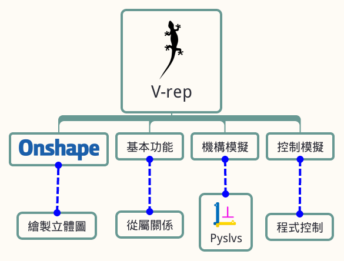
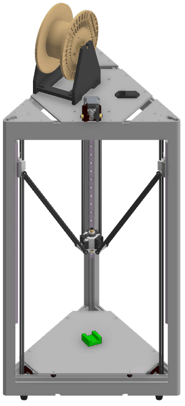
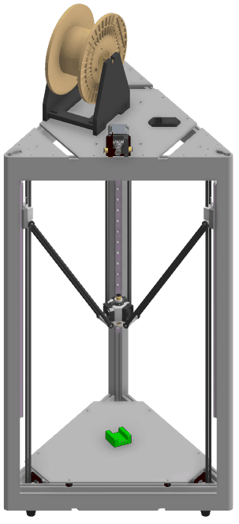
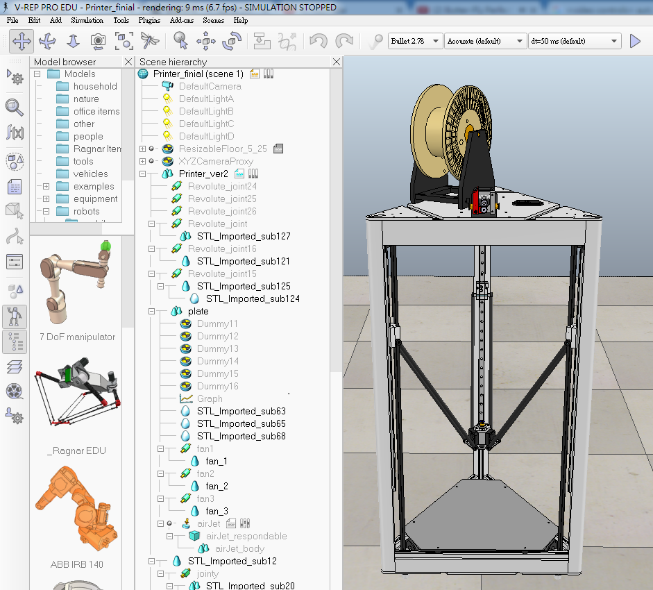
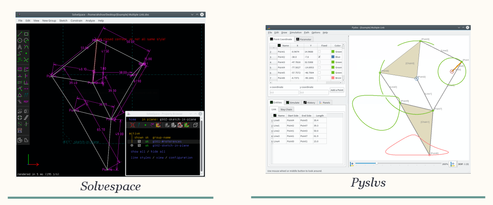

V-rep 在 Delta 3D-Printer虚實整合模擬上的應用
組員
40323218 李冠興
40323230 張 元
40323231 張立昇
40323250 詹偉志
指導老師
嚴家銘 教授
李武鉦 教授
摘要

根據 Gartner 新興技術 報告指出，3D 列印是近年來發展最快速的技術之一 ，國內外各家科技大廠紛紛投入。 3D 列印技術讓原本只存在腦海中的概念，經由 3D-Printer 做快速打樣成型，節省了過往傳統打樣的繁複過程與費用。 在使用 3D-Printer 列印的過程中，我們發現有時會有路徑錯誤的問題，相較於 CNC，還缺少了模擬列印的功能，在列印前缺少一道檢查錯誤的程序。
研究動機
一開始我們在研究模擬腳踏車的齒輪與鍊條機構，利用 3D Printer 印製零件組裝，但是在印製的過程時常出現問題，導致花費許多時間和材料。 經過討論想到如果有一套能夠模擬 3D 列印的軟體，先經過這套軟體的模擬可以降低錯誤的發生率，也可以提升印製的品質。
實體 - 系統圖

Delta 3D-Printer 架構介紹
虛擬控制 - 系統圖

V-rep - 簡介
V-rep為 Virtual robot experimentation platform 的縮寫，是一套機器人模擬軟體，讓使用者可以模擬整個機械系統 。
程式語言支援 C/C++、 Python、 Java、 Lua、 Matlab、 Octave 等等，可使用在遠端監控、硬體控制、快速原型驗證、演算法開發與參數調整、安全性檢查、機器人教學與工廠自動化模擬等各種領域。

Onshape - 簡介


Onshape 是一套由前 Solidworks 團隊開發出來的 3D 建模平台，它的優點及特色就是可以線上協同設計，和同伴能夠分工合作，且能達到參數式設計。
Onshape的使用者分類 ：
教育、商業跟業餘三大類。
Onshape - 簡介

Onshape 是一種 Full Cloud 的網路 CAD 設計平台，它的檔案都存在"雲端" ，提供協同設計的功能，並且可以很容易地從雲上找到其他人公開的模型。
協同設計主要的概念為團隊間的分工合作，大家提供自己的想法或專長，使概念更完善，這部份 Onshape 甚至提供可在平板或手機上使用的功能。
Onshape - 繪製範例
 

V-rep - 介面介紹


- 視角移動
- 視角旋轉
- 視角縮放
- 視角移動至物體
- 物體定位 (x,y,z)
- 物體旋轉 (x,y,z)
- 開始模擬
- 暫停模擬
- 結束模擬
- 慢速
- 加速
V-rep - 八連桿範例
八連桿機構能在 V-rep 內做模擬，在未來若朝向 仿生機構 研究，使用此軟體是不錯的選擇。
八連桿模擬 與 實際應用


V-rep - Printer校正
虛擬的 Printer 和 實體同樣需要校正，補正參數設定於控制程式內部。

V-rep - 內部 Scripts 控制
V-rep可透過內部 Scripts 編寫控制指令，但要為了到模擬列印，需要與其他裝置或介面通訊。

以下拿 Arduino 做為通訊範例。
控制範例 1 - 可變電阻控制噴頭位置
若要使用 Arduino 控制 V-rep，除了Arduino本身的程式碼之外，還須設定 V-rep 的 Scripts 內部程式，並透過設定相同的通訊埠和鮑率，才能達到內外溝通的功能。
控制範例 1 - Arduino程式
以下程式碼為使用三個可變電阻，分別控制V-rep內的Printer噴頭座標位置 。
方式:
將三個可變電阻的值存成固定格式 (x,y,z)，以便在 V-rep 內部讀取後轉換成噴頭位置 。

控制範例 1 - Scripts 程式
本程式基本架構由 Eric Rohmer 所提供，控制方式為收到 Arduino 傳來固定格式的數值後，經由程式語法將其轉換為點座標，使噴頭移動到相對映的位置。

可變電阻控制噴頭位置 範例影片

控制範例 2 - 六軸感測器控制噴頭位置
這個控制採用 MPU6050 六軸加速度感測器，經由角度之變化後，透過和前範例相同的方式，傳送數值到 V-rep 內部後，轉換成噴頭欲移動之座標點。

六軸感測器控制噴頭位置 範例影片
因為手的晃動導致噴頭位置不穩定

V-rep - G-Code
G-Code 的部分為 CURA 產生，並透過 Pyquino 解讀後將數值傳回 V-rep 內部， 傳值方式類似於前兩者範例。

V-rep - Particles
當噴頭經由G-Code得到路徑後，粒子會隨著噴頭的位置改變而產生。
V-rep 列印成果影片

結論
結論

平面連桿機構模擬 - 系統圖

Planar Linkages Simulation
Dimensional Synthesis
Python 3

- 直譯式語言利於有效率地測試調整
- 易於閱讀與整理的程式碼
- 與中低階語言的結合力
- 背景記憶體處理
- 物件導向、泛型編成
- 豐富、易使用的模組資源
平面連桿模擬

尺寸合成

與 Solvespace 比對
